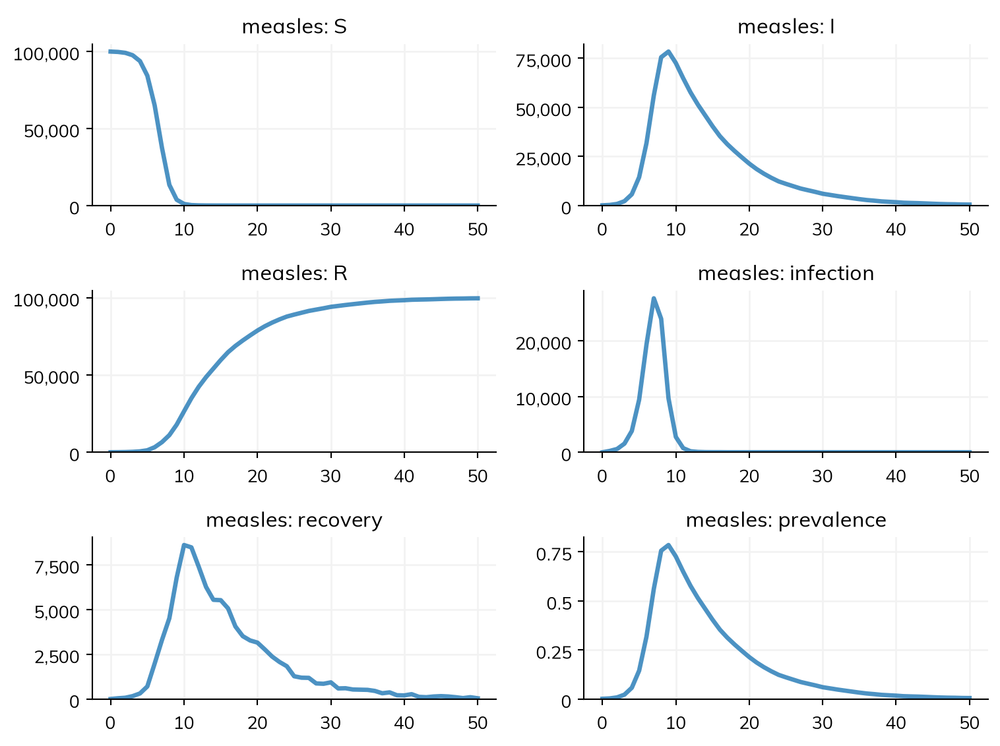
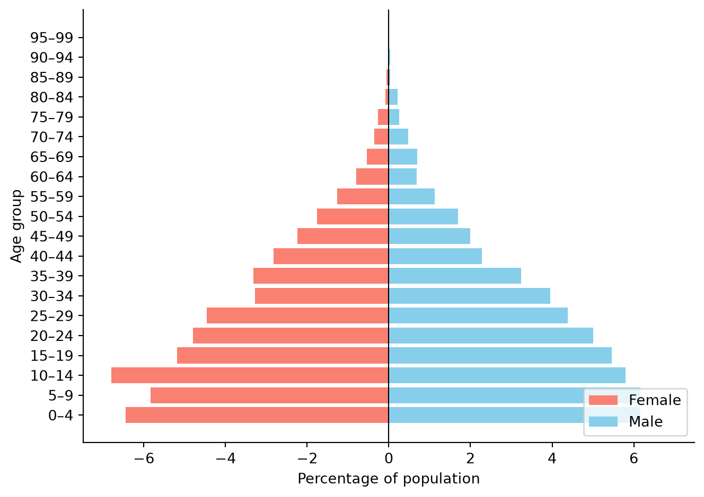
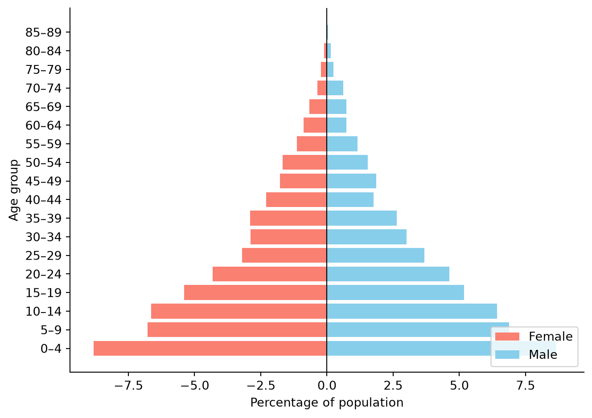
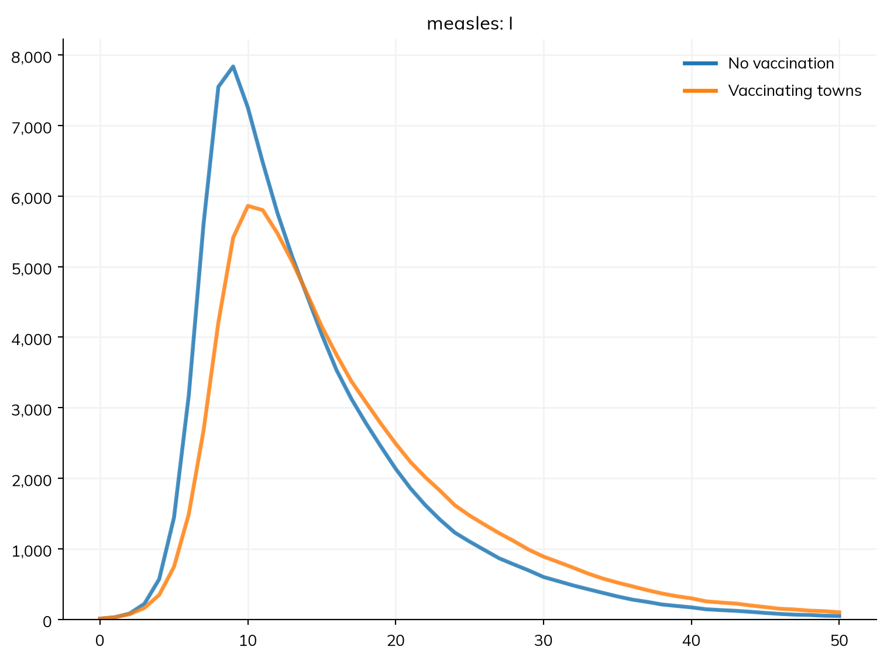
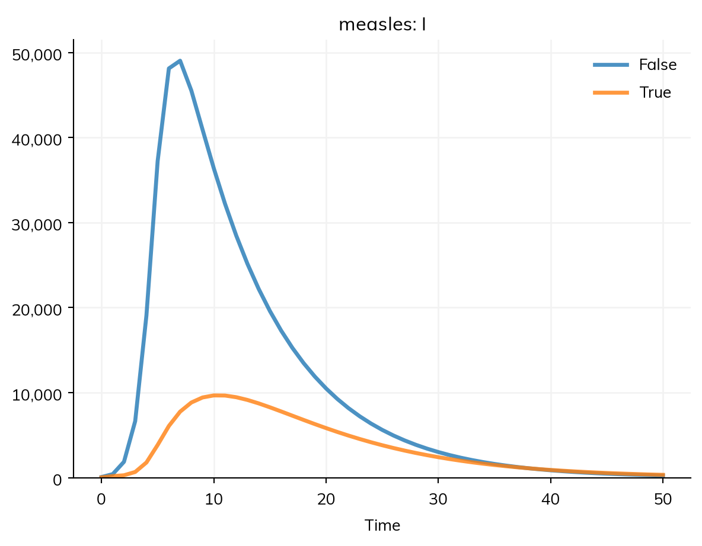

import starsim as ss
S, I, R = ss.states('S I R')
infection = S >> I @ 1.9*I # β = 1.9 per day
recovery = I >> R @ ss.days(8) # Infectious for 8 days on average
measles = ss.Disease(infection, recovery, init_prev=0.001)People and agents
Every model has a population: how many people there are, their ages and sex, and anything else about them that the model needs, such as where they live. This page covers the size of the population, its ages (including the population of a named country), other properties of people and how a model uses them, and, for a model run as agents, the People object that holds what each agent is and has, and the arrays it keeps them in. Births, deaths, and migration are in Demographics, and who meets whom is in Contact networks.
The examples use the measles model from the tutorials:
How many people
total_pop= is the number of people in the population. A model run as compartments needs nothing else:
sim = ss.Sim(measles, total_pop=100_000, stop=ss.days(50))
sim.run()Sim: measles, 100,000 people, as an ODE, days 0 to 50
measles: R0 = 15.2, with 100 infectious at the start
Done in 0.0033 s; measles: 99,900 infections; at most 74,112 infectious, on day 6Sim(n=100000; 0—50; diseases=measles)As agents, n_agents= is the number of agents. Given both, each agent stands for total_pop/n_agents people, here 10, and results are given in people, not agents:
sim = ss.Sim(measles, total_pop=100_000, n_agents=10_000, stop=ss.days(50))
sim.run()
sim.plot()Sim: measles, as 10,000 agents, each 10 people, days 0 to 50
Running as agents: n_agents was given
Note: consider a shorter step (e.g. dt=ss.days(0.25)): each step is 1 day, and infection transmits at up to 1.9 per day (with everyone infectious), 85% in a step (and I is fast too). Taking whole steps, agents may differ from the ODE by an amount of that order; sim.check_dt() shows how much it matters Done in 0.031 s; measles: 99,900 infections; at most 78,380 infectious, on day 9
The two runs differ a little, since as agents the epidemic is a stochastic process that takes whole daily steps (see Solvers and backends). Without either total_pop= or n_agents=, a model has 10,000 people. Fewer agents than people make a model faster, but add noise from chance, more so for rare events; see Branching and rescaling.
Ages and sex
As agents, each person has an age and a sex. Unless told otherwise, Starsim gives agents the ages of the world’s population in 2024, and an even chance of being female. A compartmental model split into age groups without a share for each takes the shares from the same ages, and describe() marks them as guessed.
The population of a country is ss.people(): its size, its ages, and its share of women, from the UN World Population Prospects (or, for a US state, the US Census), which come with Starsim. The sim takes its size from it, so a compartmental model can use a named population as well as agents can:
kenya = ss.people('Kenya', year=2024)
print('Population of Kenya in 2024:', round(kenya.named.total))
sim = ss.Sim(measles, people=ss.people('Kenya', year=2024, n_agents=5000), stop=ss.days(50))
sim.init()
sim.people.plot_ages();Population of Kenya in 2024: 56571298
Sim: measles, as 5,000 agents, each 11,300 people, days 0 to 50
Running as agents: people were given
Note: consider a shorter step (e.g. dt=ss.days(0.25)): each step is 1 day, and infection transmits at up to 1.9 per day (with everyone infectious), 85% in a step (and I is fast too). Taking whole steps, agents may differ from the ODE by an amount of that order; sim.check_dt() shows how much it matters
In a compartmental model, ages matter only once the model is split into age groups, with measles.stratify(age=[0, 15, 65]), which then takes the share of people in each group from the named population. See Stratification and, for contacts between age groups, Population data. The tutorial T4 – Age groups and contacts builds an age-structured measles model step by step.
Ages can also come from data of your own, with ss.People(n_agents, age_data=...): a table with a column age (the lower edge of each age group) and a column value (the number or share of people in it), or a CSV file with those columns:
ppl = ss.People(5000, age_data='test_data/nigeria_age.csv')
sim = ss.Sim(measles, people=ppl, stop=ss.days(50))
sim.init()
sim.people.plot_ages();Sim: measles, as 5,000 agents, days 0 to 50
Running as agents: people were given
Note: consider a shorter step (e.g. dt=ss.days(0.25)): each step is 1 day, and infection transmits at up to 1.9 per day (with everyone infectious), 85% in a step (and I is fast too). Taking whole steps, agents may differ from the ODE by an amount of that order; sim.check_dt() shows how much it matters
A sim copies the people it is given when it is built, so look at sim.people afterwards, not at ppl.
Properties of people
A model refers to a property of people with ss.ppl: ss.ppl.age, ss.ppl.female, or a property of your own. ss.ppl.age < 5 is a condition, which picks out people, for example to say who an intervention reaches:
vaccination = ss.vaccinate(efficacy=0.9, coverage=0.8, where=ss.ppl.age < 5, at=ss.days(10))A property of your own is given to ss.People as a state, with a value for each agent; it can be drawn from a distribution. Here 30% of people live in towns:
urban = ss.BoolState('urban', default=ss.bernoulli(p=0.3))
ppl = ss.People(10_000, extra_states=urban)
vaccination = ss.vaccinate(efficacy=0.9, coverage=0.9, where=ss.ppl.urban, at=ss.days(1))
base = ss.Sim(measles, people=ppl, stop=ss.days(50), verbose=0)
msim = ss.parallel({'No vaccination': base, 'Vaccinating towns': base.new(interventions=vaccination)})
msim.plot('measles.I')
print('Share of people in towns:', msim.sims[1].people.urban.mean())
print('Vaccinated:', msim.results.vaccination.delivered.sum())
Share of people in towns: 0.31
Vaccinated: 2800.0Vaccinating the 30% of people who live in towns slows the epidemic and lowers its peak, but with an R0 of about 15, measles still reaches nearly everyone else: a reminder that a property such as urban matters only as much as who it picks out.
A property can also be in a rate: infection = S >> I @ beta*(1 + 0.5*ss.ppl.urban)*I has transmission 50% higher in towns. ss.ppl is read when the sim is built, so the property can be given after the model is written.
In a compartmental model, people have no properties of their own, only the groups the model is split into. The same property is a stratification, and the same condition then picks out a group:
S, I, R = ss.states('S I R')
measles2 = ss.Disease(S >> I @ 1.9*I, I >> R @ ss.days(8), init_prev=0.001, name='measles')
measles2.stratify(urban={False: 0.7, True: 0.3}) # 70% rural, 30% in towns
sim = ss.Sim(measles2, interventions=vaccination, total_pop=100_000, stop=ss.days(50), verbose=0)
sim.run()
sim.results.measles.I.by('urban').plot()
States and arrays
As agents, what each person is and has is kept in arrays with one value per agent. A state such as alive, female, or a disease’s I is an ss.BoolState, an array of true or false values; a number, such as age, is an ss.FloatArr (or ss.IntArr for whole numbers). These arrays work like NumPy arrays, with sums, means, comparisons, and arithmetic, but are made for three things nearly every agent-based model needs:
- Growth: as people are born or arrive, the arrays grow, in chunks rather than one agent at a time, so that adding agents is cheap.
- Indexing: agents who die or leave stay in the arrays, so that what happened to them can still be looked up, but are left out of counts, sums, and means.
- Random values: a state’s default can be a distribution, as with
urbanabove, so each new agent draws its own value, with common random numbers so that two runs give each agent the same draw.
Every agent has a UID, its identifier, which never changes and is its position in the full (“raw”) arrays. The UIDs of the agents still taking part (alive and not removed) are people.auids, the active UIDs. Most of the time you won’t need these, but here is how they work, in a population with births and deaths (at default rates) over 20 years:
sim = ss.Sim(n_agents=1000, start='2000', stop='2020', dt=ss.years(1), demographics=True, verbose=0)
sim.init()
ppl = sim.people
print('Agents at the start:', len(ppl))
print('Mean age at the start:', ppl.age.mean())
sim.run()
print('Births:', sim.results.population.births.sum())
print('Deaths:', sim.results.died.sum())
print('Agents at the end:', len(ppl))
print('UIDs used:', ppl.uid.raw.max() + 1)
print('Length of the raw arrays:', len(ppl.age.raw))
print('Mean age of the living:', ppl.age.mean())Agents at the start: 1000
Mean age at the start: 33.988655
Births: 426.0
Deaths: 199.0
Agents at the end: 1227
UIDs used: 1426
Length of the raw arrays: 1440
Mean age of the living: 39.723263The number of agents is the number of living agents. The UIDs used include the agents who have died, and the raw arrays are a little longer still, with room for the next births. ppl.age.values gives the values for the active agents, and ppl.age.raw for every slot, including empty ones (which hold NaN). A condition on an array gives the UIDs of the agents who meet it, and those UIDs index any other array:
under5 = (ppl.age < 5).uids
print('Children under 5:', len(under5))
print('Share of them who are female:', ppl.female[under5].mean())
print('UIDs of the first few who died:', ppl.dead.uids[:5])Children under 5: 101
Share of them who are female: 0.38613861386138615
UIDs of the first few who died: [ 9 14 23 53 54]For how to pick out agents in code, see Array indexing.
People as agents
As agents, sim.people holds every agent: its properties, and the states of every module in the sim. Each person has these:
| Name | What it is |
|---|---|
alive |
Whether the agent is alive |
female |
Whether the agent is female |
age |
The agent’s age, in years |
ti_dead |
The step on which the agent died, if it has (NaN otherwise) |
ti_removed |
The step on which the agent left for another reason, such as emigration |
cause_of_death |
The cause of each death (its position in people.causes, the names of the causes; -1 for none) |
scale |
The number of people the agent stands for, relative to the others (1 unless set) |
Each module adds its own states, under its name. A declared disease adds a state for each of its states (sim.people.measles.S, .I, .R), the time each agent entered a state (ti_I) and is due to leave it, and each person’s relative susceptibility and transmissibility (rel_sus and rel_trans). To save memory, the time of entering a state is kept only when something reads it: the disease itself (e.g. for a state with a dwell time), or the code of a module in the sim that names it. Reading one that wasn’t kept, e.g. in an analysis after the run, raises an error that says so; ss.State(keep_time=True) keeps it for one state (e.g. for code that reads the time since onset), and ss.options.keep_times = True, set before the sim is built, keeps them all, and the history of every transition (e.g. sir.infection.count).
A time of entering reads as the step the move happened in, so ti_E.isclose(sim.ti) is “entered this step”. The difference of two of them is not always a duration, though: an infection by contact happens at the end of its step, and a scheduled move (such as becoming infectious after a latent period) at the start of its step, so ti_I - ti_E reads one step longer than the latent period was. For the time people spent in a state, use the state’s stays: np.mean(sim.diseases.measles.E.stays) is the mean latent period, a duration in the sim’s unit, over everyone who has entered E and left it. Those still in the state are left out (E.time gives how long they have been there so far). With each state whose time of entering is kept, the time each person last left it is kept too, so stays works for any such state, e.g. one with a dwell time (I.stays in an SIR); for another, keep its time as above.
A module adds its states to the people when the sim is initialized, so they don’t need to be given to ss.People. A property that belongs to one module (such as a disease’s immunity) is best defined in that module, with define_states() (see Custom modules); a property that several modules use (such as urban, or a social determinant of health) is best given to ss.People with extra_states=, as above.
States with several columns
Sometimes each person needs several values of the same kind, such as their immunity to each of several strains. A state can have columns=, which gives it one row per agent and one column per value. Like any state, it grows as agents are born. Here a module written as code keeps each person’s susceptibility to two strains, and the susceptibility to the second one falls by 10% each year:
class Immunity(ss.Module):
""" Susceptibility to two strains, with susceptibility to the second falling over time """
def __init__(self, **kwargs):
super().__init__(**kwargs)
self.define_states(
ss.FloatArr('sus', columns=['wild', 'mutant'], default=1.0),
)
return
def step(self):
self.sus.mutant *= 0.9**(self.t.dt/ss.years(1)) # The second column, for every agent: 10% less each year
return
sim = ss.Sim(Immunity(), n_agents=1000, demographics=True, start='2000', stop='2005', dt=ss.months(1), verbose=0)
sim.run()
sus = sim.people.immunity.sus
print('Number of agents:', len(sim.people))
print('Shape of the values:', sus.values.shape)Number of agents: 1045
Shape of the values: (1045, 2)A column can be read by name as an attribute (sus.mutant), as a key (sus['mutant']), or with sus.col('mutant'); each gives an ordinary array with one value per agent, and writing to it (sus.mutant = 0) changes the state. To index, the first index picks agents and the second picks columns, by name or by position:
uids = ss.uids([0, 1, 2])
print('Both columns, for 3 agents:')
print(sus[uids])
print('The mutant column, for 3 agents:', sus[uids, 'mutant'])
print('Mean susceptibility to the mutant:', sus.mutant.mean())
sus[uids, 'wild'] = 0 # These agents are now immune to the wild type
print('Immune to the wild type:', (sus.col('wild') < 0.5).uids)Both columns, for 3 agents:
[[1. 0.5904897]
[1. 0.5904897]
[1. 0.5904897]]
The mutant column, for 3 agents: [0.5904897 0.5904897 0.5904897]
Mean susceptibility to the mutant: 0.6092101
Immune to the wild type: [0 1 2]Since a state with several columns has several values per agent, it can’t be turned into UIDs directly; use one column, as above. Some other things to note:
columns=3gives three unnamed columns, read by position only, and a tuple such ascolumns=(2, 3)gives more dimensions.- Column names must be unique, and can’t be the name of something an array already has (such as
rawormean). sus[:, [0, 1]]gives columns 0 and 1 for every active agent.people.to_df()gives one column of the table per value, e.g.immunity.sus_wildandimmunity.sus_mutant(or_0,_1, and so on for unnamed columns).
Strains use states like this to keep each person’s immunity to each strain.
Looking at people
sim.people.to_df() gives a table with a row for each agent and a column for each state (a state with several columns gives a column for each, e.g. immunity.sus_wild):
sim = ss.Sim(measles, n_agents=1000, stop=ss.days(50), verbose=0)
sim.run()
df = sim.people.to_df()
df.head()| uid | slot | alive | age | female | ti_dead | ti_removed | scale | cause_of_death | measles.rel_sus | measles.rel_trans | measles.S | measles.I | measles.ti_I | measles.shift_I | measles.ti_left_I | measles.ti_exit_I | measles.exit_I | measles.R | |
|---|---|---|---|---|---|---|---|---|---|---|---|---|---|---|---|---|---|---|---|
| 0 | 0 | 0 | True | 43.482056 | False | NaN | NaN | 1.0 | -1 | 1.0 | 1.0 | False | False | 8.0 | 0 | 17.0 | NaN | 0 | True |
| 1 | 1 | 1 | True | 12.094236 | False | NaN | NaN | 1.0 | -1 | 1.0 | 1.0 | False | False | 6.0 | 0 | 14.0 | NaN | 0 | True |
| 2 | 2 | 2 | True | 88.953827 | False | NaN | NaN | 1.0 | -1 | 1.0 | 1.0 | False | False | 9.0 | 0 | 11.0 | NaN | 0 | True |
| 3 | 3 | 3 | True | 13.770791 | False | NaN | NaN | 1.0 | -1 | 1.0 | 1.0 | False | False | 10.0 | 0 | 19.0 | NaN | 0 | True |
| 4 | 4 | 4 | True | 37.456841 | True | NaN | NaN | 1.0 | -1 | 1.0 | 1.0 | False | False | 7.0 | 0 | 11.0 | NaN | 0 | True |
This makes it easy to summarize people in your own way, e.g. the mean age of women and of men:
df.groupby('female').age.mean()female
False 33.327446
True 34.606384
Name: age, dtype: float32sim.people.person(10) gives everything about one agent, here the one with UID 10:
sim.people.person(10)Person({
'uid': 10,
'slot': 10,
'alive': True,
'age': 27.815662,
'female': False,
'ti_dead': nan,
'ti_removed': nan,
'scale': 1.0,
'cause_of_death': -1,
'measles.rel_sus': 1.0,
'measles.rel_trans': 1.0,
'measles.S': False,
'measles.I': False,
'measles.ti_I': 7.0,
'measles.shift_I': 0,
'measles.ti_left_I': 11.0,
'measles.ti_exit_I': nan,
'measles.exit_I': 0,
'measles.R': True,
})In a compartmental run
In a compartmental run there are no agents. sim.people then has one row for each group the model is split into, and asking for a property of each person, such as sim.people.age in a model not split by age, raises an error saying to stratify by it or to run as agents. Results, describe(), and conditions such as where=ss.ppl.age < 5 (for a model stratified by age) work the same either way.
Further reading
- Mesa: AgentSet: agents as Python objects, the alternative to keeping agents in arrays
- LASER: Getting started: another framework that keeps agents’ properties in arrays, one per property
- NumPy: Indexing on ndarrays: the indexing that Starsim’s arrays build on